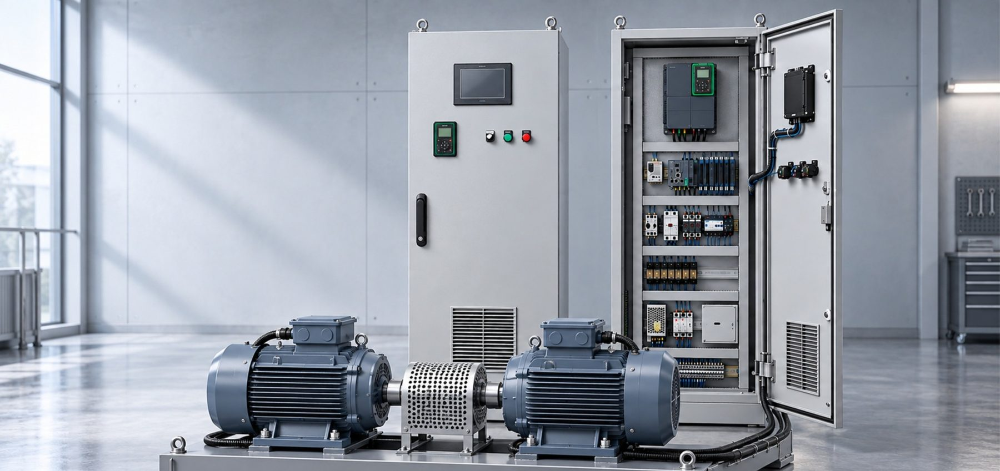

스마트제조 솔루션 기업 ㈜동인엔시스가 산업통상자원부의 '혁신프리미어 1000' 기업으로 선정됐습니다. 혁신프리미어 1000은 기술 혁신성과 성장 잠재력을 갖춘 중소·중견기업을 골라 기술개발·사업화·판로 확대를 집중 지원하는 프로그램으로, 동인엔시스는 오랜 운영기술(OT) 역량과 데이터 기반 솔루션 전환 전략을 인정받았습니다.

주요 내용
- 통합 솔루션 — 제어반 하드웨어 설계, 현장 PLC 제어 로직, 클라우드 모니터링·분석을 하나의 시스템으로 통합해 제공합니다.
- PLC–클라우드 직접 연결 — PLC에 자체 개발한 MQTT 통신 코드를 탑재해 PLC가 클라우드와 직접 데이터를 주고받습니다. 별도 온프레미스 SCADA 없이 웹 대시보드로 현장을 모니터링할 수 있습니다.
- End-to-End 구축 — 여러 업체가 나눠 맡던 PLC·엣지 게이트웨이·SCADA·클라우드 구축을 한 회사가 처음부터 끝까지 책임져 구축 기간과 비용을 줄입니다.
- 예지보전 — 진동·전류·온도 데이터를 클라우드에서 분석해 고장 전에 이상 징후를 찾아내고, 설비 가동률을 높입니다.
- 향후 계획 — 중소벤처기업부 스마트팩토리 공급기업 등록을 바탕으로 솔루션 공급을 본격화하고, 2027년 조달청 혁신제품 등록을 추진합니다.
백민기 대표는 "이번 선정은 동인엔시스가 하드웨어 중심의 시스템 통합 기업에서 데이터 기반 솔루션 기업으로 전환하고 있음을 보여 준 결과"라며 "현장에서 검증한 통합 기술력으로 스마트제조 저변을 넓히고 공공 조달과 글로벌 시장으로 사업을 확대하겠다"고 밝혔습니다.
기사 원문: IT비즈뉴스 (2026.08.06) — ㈜동인엔시스, 산업통상자원부 '혁신프리미어 1000' 선정 →